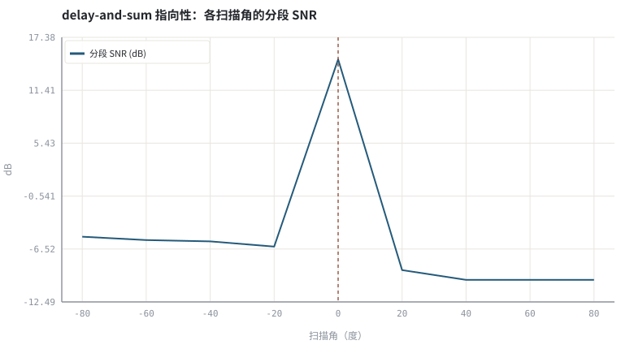
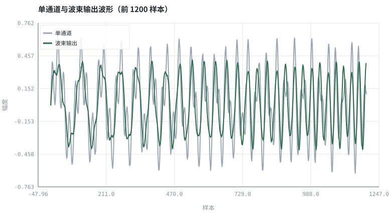

第 15 章麦克风阵列与波束形成：从 delay-and-sum 到 MVDR
多一路空间信息，就能在频域处理之前先把方向性的干扰压掉。
本章位置：上卷三大引擎已齐备；第 16 章 · 3A 级联顺序与模块间相互干扰 讨论它们在链路里的排列顺序，第 17 章 · ffmpeg / WebRTC / SpeexDSP 工具链实操 给出可复现的命令行工具链，下卷 第 26 章 · 联合 3A：多任务、级联与端到端建模 会把阵列与网络合并建模。
波束形成就是「按 key 对齐后做 group-by 求平均」：对齐正确的那一路内容相干叠加，未对齐的项在平均中互相抵消。
- 能写出均匀线阵的到达时间差 TDOA 公式。
- 能实现 delay-and-sum 波束形成并画出指向性曲线。
- 能说明空间混叠、近场与通道失配对阵列的限制。
- 能解释波束形成在 3A 链路中的位置与代价。
§知识点地图
每个知识点都配了 1～2 个扩展学习链接；本章完整资源清单见 扩展学习。
| # | 知识点 | 扩展学习 | 状态 |
|---|---|---|---|
| 1 | 均匀线阵 ULA | Beamforming ↗ · pyroomacoustics ↗ | 正文已覆盖 |
| 2 | 到达时间差 TDOA | Beamforming ↗ · pyroomacoustics ↗ | 正文已覆盖 |
| 3 | 远场假设 | Beamforming ↗ · pyroomacoustics ↗ | 正文已覆盖 |
| 4 | delay-and-sum | Beamforming ↗ · pyroomacoustics ↗ | 正文已覆盖 |
| 5 | 指向性图 | Beamforming ↗ · pyroomacoustics ↗ | 正文已覆盖 |
| 6 | 空间混叠 | Beamforming ↗ · pyroomacoustics ↗ | 正文已覆盖 |
| 7 | MVDR 与自适应波束 | Least mean squares filter ↗ · DSPRelated ↗ | 正文已覆盖 |
| 8 | 阵列前置与 AEC | Echo cancellation ↗ · ITU-T G.168 ↗ | 正文已覆盖 |
§15.1多一只麦克风，就多一个维度
τ_m(θ) = m·d·sin(θ)/c ，y_m[n] = s[n − τ_m(θ₀)] + u[n − τ_m(θ_u)] + v_m[n]
均匀线阵相邻麦克风间距为 d、声速 c，来自角度 θ 的平面波在相邻通道之间差 τ 秒。delay-and-sum 按目标方向把各通道重新对齐再求平均：目标方向相干叠加，其它方向因相位不一致而部分抵消。
| 概念 | 公式 / 条件 | 工程含义 |
|---|---|---|
| TDOA | τ = d·sinθ/c | θ=0 时各通道无延迟，±90° 时最大 |
| 空间混叠 | d < c/(2·f_max) | 高频时 d 过大会出现多个指向峰 |
| 阵增益 | 白噪声下约 10log₁₀M dB | M 路非相干噪声平均后功率降为 1/M |
| 近场 | 声源距离 < 2d²/λ | 平面波假设失效，需球面波模型 |
§15.2固定波束、自适应波束与 3A 的位置
delay-and-sum 权值与数据无关，稳定、零训练、可解释；MVDR 在「目标方向无失真」约束下最小化输出功率，需估计多通道协方差矩阵并求逆，能挖出深零陷，但对导向矢量误差与通道失配敏感。
- 位置：通常放在 AEC 之前减少进入链路的干扰；也有人放在 AEC 之后，避免自适应滤波器去追一个随波束变化的回声路径。
- 代价：多通道采集、校准、同步与额外算力，端侧未必负担得起。
- 互补性：阵列解决「空间可分」，3A 解决「时间与频率可分」，二者不互相替代。
实验用整数样本延迟与完全校准的合成阵列，未模拟分数延迟滤波器、通道增益失配与真实房间混响；真实系统请用 pyroomacoustics 的镜像源模型生成多通道 RIR。
§Python 实验
实验 15-1 · 均匀线阵 delay-and-sum 与指向性扫描
#!/usr/bin/env python3
# -*- coding: utf-8 -*-
"""合成 4 通道阵列信号，按角度扫描固定波束，测量干扰抑制并输出可试听样本。
全部语音 / 噪声 / 房间冲激响应均为代码合成信号，仅用于教学演示机制与量级。
"""
from __future__ import annotations
import math
import pathlib
import random
import statistics
import sys
import time
_here = pathlib.Path(__file__).resolve()
for _p in _here.parents:
if (_p / "tools" / "dsp.py").exists():
sys.path.insert(0, str(_p / "tools"))
break
from dsp import (SAMPLE_RATE, fft, hann, stft, istft, magnitude_db, spectrum,
white_noise, tone, chirp, synthetic_speech, rir, convolve,
fft_convolve, delay, clip, normalize_peak, rms, rolling_rms,
smooth, db, energy_db, snr_db, erle_db, seg_snr_db,
scale_align, si_sdr_db, lufs_approx,
write_wav, read_wav, wav_info)
from chart import Chart, heatmap, BLUE, RED, GREEN, AMBER
FIG = _here.parents[1] / "fig"
AUDIO = _here.parents[1] / "audio"
FIG.mkdir(exist_ok=True)
AUDIO.mkdir(exist_ok=True)
random.seed(7)
# ---- 参数区 ----
N = 8000
MICS = 4
SPACING = 0.10 # 麦克风间距（米）
SPEED = 340.0 # 声速 m/s
INTERFERER_ANGLE = 65 # 干扰源角度（度）
ANGLES = tuple(range(-80, 81, 20))
# ---- 计算与作图 ----
rng = random.Random(7)
target = chirp(150, 3000, N, amp=0.35)
interf = tone(730, N, amp=0.30)
def shift(x, d):
return [x[i - d] if 0 <= i - d < N else 0.0 for i in range(N)]
def tdoa(angle, m):
return int(round(m * SPACING * math.sin(math.radians(angle)) / SPEED * SAMPLE_RATE))
mics = []
for m in range(MICS):
s = shift(target, tdoa(0, m))
u = shift(interf, tdoa(INTERFERER_ANGLE, m))
v = white_noise(rng, N, 0.010)
mics.append([s[i] + 0.9 * u[i] + v[i] for i in range(N)])
def beam(theta):
parts = [shift(mics[m], -tdoa(theta, m)) for m in range(MICS)]
return [sum(p[i] for p in parts) / MICS for i in range(N)]
scores = [seg_snr_db(target, scale_align(beam(a), target)) for a in ANGLES]
best = ANGLES[scores.index(max(scores))]
out = beam(best)
c = Chart(FIG / "15-directivity.svg", "delay-and-sum 指向性：各扫描角的分段 SNR",
xlabel="扫描角（度）", ylabel="dB",
xticks=[(i, "%d" % a) for i, a in enumerate(ANGLES)])
c.line(range(len(ANGLES)), scores, BLUE, label="分段 SNR (dB)")
c.vline(ANGLES.index(best), RED, label="峰值角")
print("指向图:", c.save())
w = Chart(FIG / "15-waveform.svg", "单通道与波束输出波形（前 1200 样本）",
xlabel="样本", ylabel="幅度")
w.line(range(1200), mics[0][:1200], "#9aa6b2", label="单通道")
w.line(range(1200), out[:1200], GREEN, label="波束输出")
print("波形图:", w.save())
write_wav(AUDIO / "15-single.wav", normalize_peak(mics[0]))
write_wav(AUDIO / "15-beam.wav", normalize_peak(out))
print("扫描角 SNR: " + " ".join("%d度=%.1f" % (a, s) for a, s in zip(ANGLES, scores)))
print("最佳角度=%d度 | 单通道 segSNR=%.2f -> 波束=%.2f dB | SAMPLE_RATE=%d MICS=%d" %
(best, seg_snr_db(target, scale_align(mics[0], target)), max(scores), SAMPLE_RATE, MICS))操作：对照指向性曲线的峰值角度与真实目标方向 0°，试听两个 WAV。 预期与判读：分段 SNR 在目标方向附近出现峰值，说明对齐后目标相干叠加、干扰被部分抵消。本实验使用整数延迟与理想校准，真实阵列还需处理分数延迟与通道失配。
改参数看趋势：把 SPACING 改成 0.02（阵孔径变小），指向性曲线会明显变钝。 文件位置：part3/15-beamforming/code/15-beamforming.py


15-single.wav
单通道：目标与单音干扰混在一起（16 kHz / 16-bit 单声道，代码合成信号，不是真实录音）
15-beam.wav
波束输出：方向性干扰被部分抵消（16 kHz / 16-bit 单声道，代码合成信号，不是真实录音）
代码块右上角可一键复制；仓库里的 code/*.py 由 tools/extract_code.py 从这些代码块自动抽取。脚本只用标准库、固定 random.seed(7)，运行后写出 fig/*.svg 与 audio/*.wav；批量运行用 ./tools/run_python.sh。
§可选真机命令片段
以下命令不参与批量运行，需要本机自行安装对应工具。滤镜是否可用取决于本机 ffmpeg 版本与编译选项，请先用 ffmpeg -filters / ffmpeg -version 自查，并以 https://ffmpeg.org/ffmpeg-filters.html 与各自官方文档为准；本书不假定任何特定版本具备某项能力。
用 ffmpeg 检查多通道文件的通道布局
ffmpeg -hide_banner -i array.wav -af astats=metadata=1 -f null - 2>&1 | grep RMS说明：astats 可逐通道给出 RMS 与峰值统计，用于核对多通道采集是否失衡；滤镜可用性以本机 `ffmpeg -filters` 与 https://ffmpeg.org/ffmpeg-filters.html 为准。
§本章参考资料
按本章知识点挑选的精读资料；更多检索入口见 扩展学习。
§常见误区
- 忽略 d 与最高频率的关系，高频出现栅瓣与空间混叠。
- 用整数延迟近似分数延迟，宽带信号下指向性失真。
- 把波束放在 AEC 之后却不同步更新参考路径，回声模型被破坏。
- 忽略通道增益/相位失配，MVDR 的零陷落在错误方向。
§习题与思考
- 推导 d=0.10 m、16 kHz 下 65° 入射的相邻通道延迟（样本）。
- 解释为什么 M 路非相干噪声平均后功率降为 1/M。
- 列举两种会造成 MVDR 导向矢量失配的现实因素。
§扩展学习
继续检索
- Google Scholar：microphone array delay and sum MVDR beamformer ↗
- arXiv：microphone array delay and sum MVDR beamformer ↗
- GitHub：microphone array delay and sum MVDR beamformer ↗
全书链接总表见 FFmpeg Filters 文档 ↗ 与 附录 A.7；滤镜是否可用请以本机 ffmpeg -filters 为准。
§延伸阅读与内链
- 第 16 章 · 3A 级联顺序与模块间相互干扰 级联顺序；第 26 章 · 联合 3A：多任务、级联与端到端建模 联合 3A；第 20 章 · 训练数据合成：RIR、噪声、SNR 配比与数据泄漏 多通道数据合成。